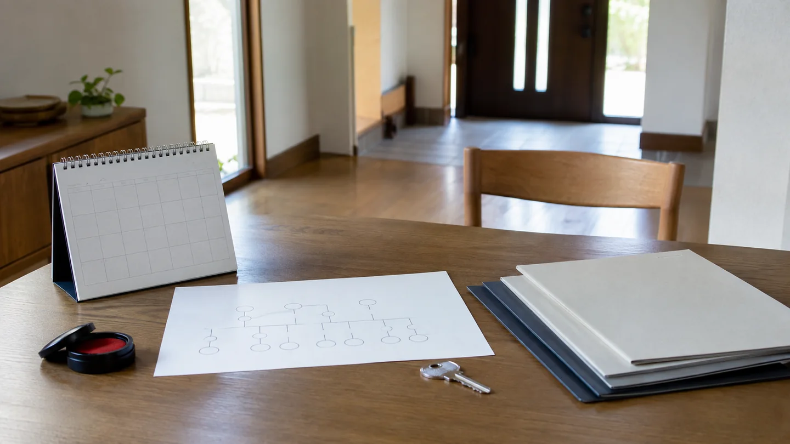
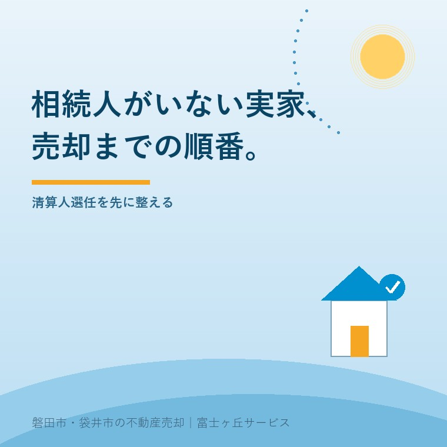

2026年9月6日｜カテゴリ：相続／財産管理／不動産売却


この記事の要点
Q. 相続人がいない親族の実家は、どうすれば売れますか。
A. 戸籍、遺言、相続放棄を確認し、被相続人の最後の住所地を管轄する家庭裁判所へ相続財産清算人の選任を申し立てます。選任・公告・財産調査を経て、清算人が権限外行為許可を得て売却し、債務の支払いなどを行います。親族だけで売買契約は進めません。
磐田市・袋井市・森町では、相続関係を専門家が確認する間に、地域密着の不動産会社から建物、道路、境界、残置物の資料を集める選択肢があります。
身寄りのない親族が亡くなり、実家の鍵だけが手元にある。草木や雨漏りは待ってくれないのに、誰の名で管理し、誰が売れるのか分からない。この場面では、査定額より先に権限者を確かめます。
国土交通省が公開する「財産管理制度の活用に関する参考資料」のHTTP更新情報は、2026年9月3日です。PDF本文には作成日や改定日の表示がないため、「制度が9月3日に変わった」とは読みません。2026年9月6日に内容を確認しました。
資料は、相続人が明らかでない場合の相続財産清算制度と、所有者の所在が分からない土地・建物の管理制度などを分けています。似た言葉を一つにすると、申立先まで間違えます。
相続財産清算制度は、人が亡くなり、相続人の存在・不存在が明らかでない場合に、その人の全財産を清算する仕組みです。相続人全員が相続放棄し、相続する人がいなくなった場合も含みます。
子どもがいないだけでは、相続人不存在と確定しません。配偶者、親、兄弟姉妹、先に亡くなった兄弟姉妹の子などへ相続順位が移る場合があります。子どもがいない方の相続順位と実家の行き先で、入口を整理しています。
相続人はいるが連絡が取れない場合、所有者が生存しているが所在不明の場合、登記名義人を調べても所有者が分からない場合は、それぞれ別の検討が要ります。
相続人の所在が分からず実家の売却が止まった場合の手順は、相続人が行方不明｜実家売却の3段階で整理しました。
| 状態 | 資料が示す主な制度 | 申立先 |
|---|---|---|
| 死亡後、相続人が明らかでない | 相続財産清算 | 被相続人の最後の住所地の家庭裁判所 |
| 所有者が生存し、従来の住所を去って所在不明 | 不在者財産管理 | 従来の住所地・居住地の家庭裁判所 |
| 調査しても土地・建物の所有者や所在が不明 | 所有者不明土地・建物管理 | 不動産所在地の地方裁判所 |
「疎遠だから相続人はいない」とは言えません。戸籍の範囲、遺言の有無、相続放棄の受理を専門家と確かめます。相続放棄後に現に占有している人の保存義務は、相続放棄後の実家管理を説明した記事も参照してください。
相続人が明らかでない実家は、申立て、予納、清算人選任、公告、財産調査、売却許可、売買と債務支払い、管理終了の順で進みます。買主を探す前に、売却できる人を決めます。
遺言と遺言執行者がいる場合は、初めから清算人の道と決めません。遺言内容と権限を確認します。売却権限の違いは遺言執行者が実家を売る手順で説明しています。
相続財産清算人の選任申立ては、国土交通省の参考資料では収入印紙800円、郵便切手、官報公告料5,075円です。これに必要に応じて予納金が加わります。
意外なのは、印紙800円という小さな数字だけを見ても総額が分からないことです。予納額は事務内容や期間などを踏まえて裁判官が判断し、全国一律の標準額は資料にありません。残れば返還されますが、費用が見込みを超えれば追納もあり得ます。
清算人の報酬は原則として相続財産から支払われ、財産が少なければ申立人の予納金から支払われる場合があります。実家の売却見込額があっても、固定資産税、草刈り、修繕、残置物、測量、仲介など売却までの支出を別に見ます。
6か月以上の公告が終わるまで一切売れない、とも資料は断定していません。売却許可を求める時期、査定や売出しを始める時期は、選任された清算人と家庭裁判所へ確認します。
相続財産清算制度の良い点は、誰も契約できない状態に、家庭裁判所が選任する管理・清算の担い手を置けることです。財産目録を作り、債権者へ対応し、許可を得て不動産を処分する道ができます。
その上で注文があります。制度の説明だけでは、選任までの雨漏り、草木、保険、鍵を誰が見るのかが残ります。売れるまでの管理費を最初から予算へ入れ、応急対応の連絡先を決めなければ、法的な順番が整う間に家が傷みます。
大石浩之（磐田市／不動産業）として、私はこう考えます。相続人がいない家は、先に売る話へ行ってはいけません。誰が財産を管理し、誰の名で契約するかを家庭裁判所で整える。買主を探すのはそれからです。
一方で「清算人が決まるまで家へ触らない」と言い切るのも、私は迷います。漏水や倒木の兆候は進みます。しかし、親族だけで残置物を捨てたり、工事や売買を契約したりする権限があるとは限りません。現況を写真で残し、保存に必要な行為を家庭裁判所や弁護士へ相談します。
磐田市・袋井市・森町の実家では、宅地に農地、山林、私道、未登記の物置が付くことがあります。家屋だけの査定で終えず、登記上の不動産と固定資産税通知書の記載を照合します。
清算人が選任される前に親族が売却条件を約束することは避けます。ただ、家の情報が失われないよう、誰が鍵と書類を保管するかを決め、専門家へ渡せる状態にしておくことはできます。
「相続人がいない」と「相続人と連絡がつかない」の違いは、戸籍を途中まで見ただけでは分かりません。代襲や数次相続で関係者が増える例は、数次相続で相続人が増える仕組みを参照してください。
富士ヶ丘サービスでは、介護と相続と空き家の相談を同じ入口で受け、磐田・袋井の道路、境界、建物、残置物を地域の不動産実務へ落とします。相続関係や申立ての個別判断は専門家につなぎ、売主とご家族が困らない売却条件を清算人と確認します。
今日の結論は「売る」「残す」でなくて構いません。まず6資料の所在を一枚にし、誰が家庭裁判所または専門家へ相談するかを決める。権限者が確定した後の選択肢が減らない準備です。
全員の相続放棄により相続する人がいなくなった場合は、相続財産清算制度の対象になり得ます。ただし、次順位の相続人、遺言、放棄の受理状況を戸籍と書類で確かめる必要があります。申立ての要否と申立人になれるかは、家庭裁判所または弁護士などの専門家へ確認してください。
国土交通省の参考資料は、相続人捜索の公告を6か月以上と示しますが、その満了まで一切売却できないとは書いていません。不動産売却には家庭裁判所の権限外行為許可が必要です。査定や売出しを始める時期は、選任された清算人と家庭裁判所へ個別に確認してください。
保存のための対応と、財産を処分する行為は分けます。親族というだけで売買契約や残置物処分の権限が生まれるわけではありません。漏水など緊急対応が必要なら記録を残し、家庭裁判所や弁護士へ相談します。査定の依頼主体や立入り方法も、清算人の権限と合わせて確認してください。

この記事を書いた人：大石浩之（宅地建物取引士）
磐田市で不動産業と介護事業を営み、相続関係の確認が必要な実家について、専門家へつなぐ手前の建物、道路、境界、残置物を整理します。権限者と売却条件を確認し、ご家族が困らない出口を一件ずつ考えます。プロフィール
ふじがおか実家カルテ｜固定資産税通知書だけでも相談可
権限を整える間に、実家の資料を一枚へ。
名義、道路、境界、残置物、災害情報を机上で確認し、清算人と専門家へ渡せる形にします。税務・登記・相続の個別判断は各専門家へつなぎます。
本記事は2026年9月6日時点の公表資料に基づく一般的な説明です。相続人の範囲、申立資格、裁判所の管轄、必要書類、予納金、清算人の権限、売却許可、債権の扱いは個別事情で変わります。税務・登記・相続・契約の個別判断は、家庭裁判所、税理士、司法書士、弁護士などの専門家に確認してください。
富士ヶ丘サービス株式会社／静岡県磐田市見付5789番地1／TEL:0538-31-3308／静岡県知事 (2) 第14083号／代表取締役・宅地建物取引士 大石 浩之